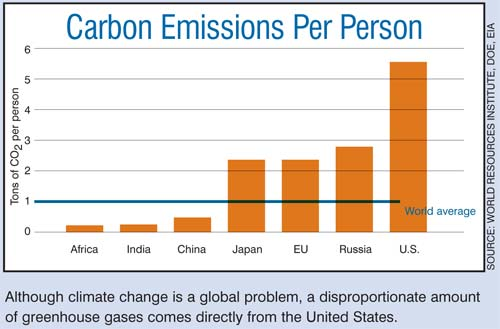

Excerpted from An Inconvenient Truth: The Planetary Emergency of Global Warming and What We Can Do About It, by Al Gore (Rodale, 2006), available wherever books are sold.
When considering a problem as vast as global warming, it’s easy to feel overwhelmed and powerless. But we need to resist that response, because this crisis will get resolved only if we as individuals take responsibility. By educating ourselves and others, by doing our part to minimize our use and waste of resources, by becoming more politically active and demanding change - in these ways and many others, each of us can make a difference.
Below you’ll find a range of practical steps anyone can take to reduce the stress our high-tech lives exert on the natural world. As we incorporate these ideas into our lives, we may find that not only are we contributing to a global solution, we are also making our lives better. Using less electricity and fuel, for example, saves money. More walking and biking improve our health; eating locally grown produce brings enhanced taste and nutrition; breathing cleaner air is energizing and healing; and creating a world of restored natural balance ensures a future for our children and grandchildren.
One way to begin making a difference is to learn how the way we live impacts our global environment. The average American is responsible for about 15,000 pounds of carbon dioxide (CO2) emissions each year. This per capita number is greater than that of any other industrialized country.
To calculate how much CO2 you produce, visit www.climatecrisis.net/takeaction. Armed with this information, you can take effective action and work toward living a carbon-neutral life.
For most Americans, the easiest and most immediate opportunities to reduce emissions can be found right in their own homes. Most greenhouse gas emissions that originate in the home are a product of the fossil fuels burned to generate electricity and heat. Saving energy is not only a good thing to do for the climate crisis: It can also translate to real cost savings. Choosing energy-efficient alternatives for the home can help families cut their energy bills by as much as a third, while reducing greenhouse gas emissions by a similar amount.
ENERGY-EFFICIENT LIGHTING
One of the easiest and most cost-effective ways to reduce your energy use and costs is to replace regular incandescent light bulbs with superefficient compact fluorescent light bulbs (CFLs). While CFLs cost more upfront, they last up to 10,000 hours - 10 times longer than incandescent bulbs - and use 66 percent less energy. You can buy CFLs at just about any hardware or retail store.
ENERGY-EFFICIENT APPLIANCES
When you purchase new appliances, choosing models designed to use energy efficiently will save you money over time and reduce greenhouse gas emissions. For information about the newest energy-efficient appliances, visit www.energystar.gov/products. The American Council for an Energy-Efficient Economy has a checklist to guide home energy savings, including how to operate appliances more efficiently.
HEAT & COOL MORE EFFICIENTLY
Heating and cooling your house can be a major energy drain, typically accounting for about 45 percent of a household’s total energy use. Lowering your heat by just a few degrees in the winter and setting your air conditioner a couple of degrees higher in the summer can add up to real energy savings over time. And using a programmable thermostat allows you to adjust temperatures automatically - for example, while you are sleeping or at work.
GET A HOME ENERGY AUDIT
Performing a comprehensive energy audit can help identify areas of your home that are consuming the most power. For an informative do-it-yourself tool to conduct your own audit, visit www.energyguide.com. The typical household spends an average of $1,500 per year on energy and can save as much as $450 or more by implementing some simple energy-efficiency measures. There are also professional home energy auditors who can give you thorough energy-efficiency assessments. To find an energy specialist in your area, visit the Residential Energy Services Network.
CONSERVE HOT WATER
You can significantly cut energy use by setting your water temperature no higher than 120 degrees. You can also conserve hot water by installing efficient low-flow shower heads. Also consider the water requirements of appliances. Front-loading washing machines are much more efficient than top-loading machines. Washing clothes in warm or cold water, rather than hot, can be a big energy saver as well.
REDUCE STANDBY POWER WASTE
Many appliances - including televisions, DVD players and cell phone chargers - use electricity even when they are turned “off.” In fact, 25 percent of the energy a television uses is consumed when it isn’t even on. The only way to be sure your appliance is not using power is to unplug it, or to plug it into a power strip, which you can then switch off. For more information, visit www.standby.lbl.gov/index.html.
ENERGY-EFFICIENT COMPUTERS
Energy-efficient computers are equipped with a power management feature that, when enabled, causes the computer to go into a low-power mode. Enabling power management can save 70 percent of the energy normally used by a computer. Also be aware that laptop computers are 90 percent more energy efficient than desktop models. Inkjet printers consume 90 percent less energy than laser printers. For more information, visit Energy Star.
SWITCH TO GREEN POWER
More and more people are electing to use energy generated by cleaner sources such as the sun, wind, the heat of the Earth or the burning of biomass. For those who aren’t in a position to install their own renewable energy systems, there is another way to participate in the shift to green power. In many regions, consumers can contract with their utility companies to receive energy from more environmentally friendly sources. There may be a slightly higher cost for green power, but in general the premium is negligible and will likely come down as more consumers elect this option. For more information, visit the Environmental Protection Agency.
If green power is not available through your public utility, you can purchase Tradeable Renewable energy Certificates (TRCs) to offset your energy use. For more information, visit the Renewable Electricity Certification Program.
GET AROUND ON LESS
Almost one-third of the CO2 produced in the United States comes from vehicles that transport us from place to place, or are used in the course of producing and delivering the goods and services we consume. More than 90 percent of this travel is by automobile, which means that fuel economy standards are of critical importance. The average gas efficiency for passenger vehicles has actually declined over the last decade, largely because of the increased popularity of SUVs and light trucks. New regulations that impose more stringent standards on these vehicles will hopefully reduce this trend, and further innovations in gas economy, alternative fuels and hybrid technology will provide more eco-friendly options.
Reduce the number of miles you drive by walking, biking, carpooling or taking mass transit wherever possible. Avoiding just 20 miles of driving per week would eliminate about 1,000 pounds of CO2 emissions per year. For advice on how to lobby for better pedestrian conditions, visit www.americawalks.org, and for better biking conditions, visit www.bikeleague.org. A free national service is available to help you coordinate your travels with other commuters. For more information, visit www.erideshare.com. For more information about how to use and support the expansion of mass transit, visit www.publictransportation.org.
DRIVE SMARTER
Some simple changes in driving habits can improve your vehicle’s fuel efficiency. Avoid commuting in rush hour, if possible. You’ll waste less time sitting in traffic and your vehicle will consume less fuel. Observe the speed limit: A car’s fuel economy drops off sharply at speeds above 55 mph. Avoid unnecessary idling and keep your car in good running order. And, as much as possible, plan ahead and combine errands into one trip. For information about maximizing the fuel efficiency of your car, visit www.fueleconomy.gov/feg/driveHabits.shtml.
MORE EFFICIENT VEHICLES
Make your next vehicle purchase a more efficient one. Driving a car that gets more miles to the gallon will not only save you cash at the gas station, it will also reduce your CO2 emissions. You can look up fuel-efficiency estimates for most cars at www.epa.gov/autoemissions or https://www.fueleconomy.gov/mpg/MPG.do?action=garage.
Hybrids consume far less gas and are much cleaner for the environment. Some hybrids get up to 60 mpg. For more information, visit www.hybridcars.com.
REDUCE AIR TRAVEL
Reducing air travel even by one or two flights per year can significantly reduce emissions. Take vacations closer to home, or get there by train, bus, boat or even car. Buses provide the cheapest and most energy-efficient transportation for long distances, and trains are at least twice as energy efficient as planes. If your airplane travel is for business, consider whether you can telecommute instead. If you must fly, consider buying carbon offsets to compensate for the emissions caused by your air travel. For assistance in planning green travel and purchasing carbon offsets, visit the Better World Club.
In America, we have grown used to an environment of plenty, with an enormous variety of consumer products always available and constant enticement to buy “more,”“new” and “improved.”
This consumer culture has become so intrinsic to our worldview that we’ve lost sight of the huge toll we are taking on the world around us. By cultivating a new awareness of how our shopping and lifestyle choices affect the environment and directly cause carbon emissions, we can begin to make positive changes to reduce our negative effects.
SAVE MONEY, BUY LESS
Energy is consumed in the manufacturing and transport of everything you buy. A good way to reduce the amount of energy you use is simply to buy less. Before making a purchase ask yourself if you really need it. Can you borrow or rent? Can you find the item secondhand? For ideas on how to pare down, visit www.newdream.org.
BUY THINGS THAT LAST
“Reduce, reuse and recycle” has become the motto of a growing movement dedicated to producing less waste and reducing emissions by buying less, choosing durable items over disposable ones, repairing rather than discarding and passing items that are no longer needed on to someone who can make use of them. To find a new home for things you no longer need, visit www.freecycle.org.
PRE-CYCLE: REDUCE WASTE BEFORE YOU BUY
Vast amounts of natural resources and fossil fuels are consumed each year to produce the paper, plastic, aluminum, glass and Styrofoam that hold and wrap our purchases. Give preference to products that use less or recycled packaging.
RECYCLE
It has been suggested that if 100,000 people who currently don’t recycle began to do so, they would collectively reduce CO2 emissions by 42,000 tons a year. As an added benefit, recycling reduces pollution and saves natural resources, including precious trees that absorb CO2. To learn how to recycle just about anything in your area, visit www.earth911.org.
COMPOST
When organic materials are disposed of in the general trash, they end up compacted deep in landfills. Without oxygen to assist in their natural decomposition, the organic matter ferments and gives off methane, which is the most potent of the greenhouse gases - 23 times more potent than CO2 in global warming terms. By contrast, when organic waste is properly composted in gardens, it produces rich nutrients that add energy and food to the soil.
EAT LESS MEAT
It takes far more fossil-fuel energy to produce and transport meat than to deliver equivalent amounts of protein from plant sources. In addition, much of the world’s deforestation is a result of clearing and burning more grazing land for livestock. For more information, visit www.earthsave.org/globalwarming.htm.
BUY LOCAL
It is estimated that the average meal travels well over 1,200 miles by truck, ship, and/or plane before it reaches your dining room table. One way to address this is to eat foods that are grown or produced close to where you live. As much as possible, buy from local farmers markets or from community supported cooperatives.
OFFSET EMMISSIONS
It is virtually impossible to eliminate our personal contributions to the climate crisis through reducing emissions alone. You can, however, reduce your impact to the equivalent of zero emissions by purchasing carbon offsets. When you purchase carbon offsets, you are funding a project that reduces greenhouse gas emissions elsewhere by, for example, increasing energy efficiency, developing renewable energy, restoring forests or sequestering carbon in soil. For more information, visit the Carbon Emissions Offset Directory.
Our actions to help solve the climate crisis can extend well beyond the ways we personally reduce our emissions. By continuing to learn about the state of the environment and what is being done about it, we can inform and inspire others to action. We can bring awareness to our neighborhoods, schools and workplaces, and find ways to implement programs in these and other communities. As consumers, we can use our purchasing and investing power to send messages of support to corporations and outlets that show integrity and leadership. As citizens of a democracy, we can support candidates who show a record of environmental responsibility. We can lobby in support of programs and actions that advance global cooperation on this issue. To learn more about where politicians and candidates stand on global warming, visit www.lcv.org/scorecard. Get the facts and make sure your voice is heard!
|
NASA This is the most frequently published photograph in history; it is the last picture taken by a human from space and is the only photo we have in which the Earth is fully illuminated instead of partially shrouded in darkness. |
 WORLD RESOURCES INSTITUTE, DOE, EIA Although climate change is a global problem, a disproportionate amount of greenhouse gases comes directly from the United States. |
|